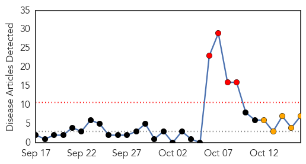

West Nile Virus
30-Day Web Trend
0 alerts, 0 warnings

30-Day Twitter Trend
0 alerts, 0 warnings

Article Locations

Article Confidences

Top Articles:
-
No articles found for Oct 16, 2015
Top Tweets:
-
No tweets found for Oct 16, 2015
Hepatitis
30-Day Web Trend
4 alerts, 5 warnings

30-Day Twitter Trend
0 alerts, 0 warnings

Article Locations
Article Confidences

Top Articles:
- 0.874
- Courthouse News Service
- 0.844
- No new hepatitis C cases, says SGH, news, Health News, AsiaOne YourHealth
- 0.843
- More than 600 SGH patients and staff test negative for hep C, news, Health News, AsiaOne YourHealth
- 0.621
- South Sudan: Sudden spike in diseases threatens thousands of lives in Bentiu camp - South Sudan
- 0.602
- The looming threat of clean drinking water scarcity
- 0.541
- Kivexa (abacavir and lamivudine) Drug
- 0.512
- Hepatitis C rates exploding among suburban N.J. heroin users, study finds
Top Tweets:
-
No tweets found for Oct 16, 2015